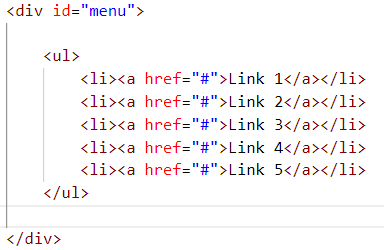
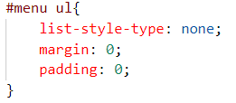
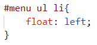
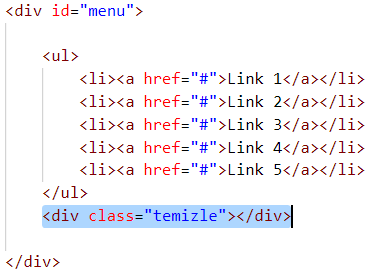
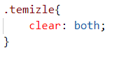
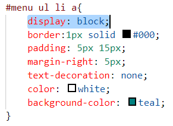
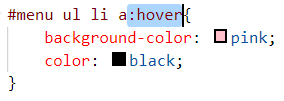

Menü, çoğu zaman div içerisindeki sırasız listeden yapılır. Öncelikle bir div oluşturularak sırasız liste içindeki linkleri oluşturunuz. (div'in id'si menu olsun)

CSS ile ilk olarak ul etiketi seçilir. Listenin etiketleri kaldırılır. Boşluklar sıfırlanır

Menü yan yana olacaksa li etiketi seçilir. float:left; özelliği ile yan yana getirilir

Bu aşamada float etkisinden dolayı menü kaymış gibi görünür. Bunu Düzeltmek için float etkisini temizlemek gerekir.Bunun için ul etiketinden sonra temizle sınıfına sahip bir div eklenir yani menü divi kapanmadan önce eklenir

temizle sınıfına clear:both; özelliği eklenir

Sonra a etiketleri seçilir. a etiketlerinin ilk özelliği display:block; özelliğidir. Ondan sonra a etiketlerinin nasıl görünmesini istiyorsanız o özellikleri ekleyebilirsiniz.

a etiketlerinin fare üzerine gelinceki durumu için a etiketinin aynı seçicisi tekrar yazılıp sonuna :hover eklenir ve istenilen özellikler yazılır
